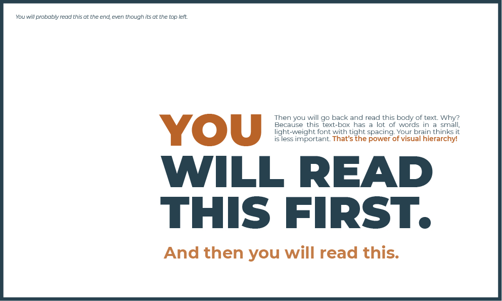
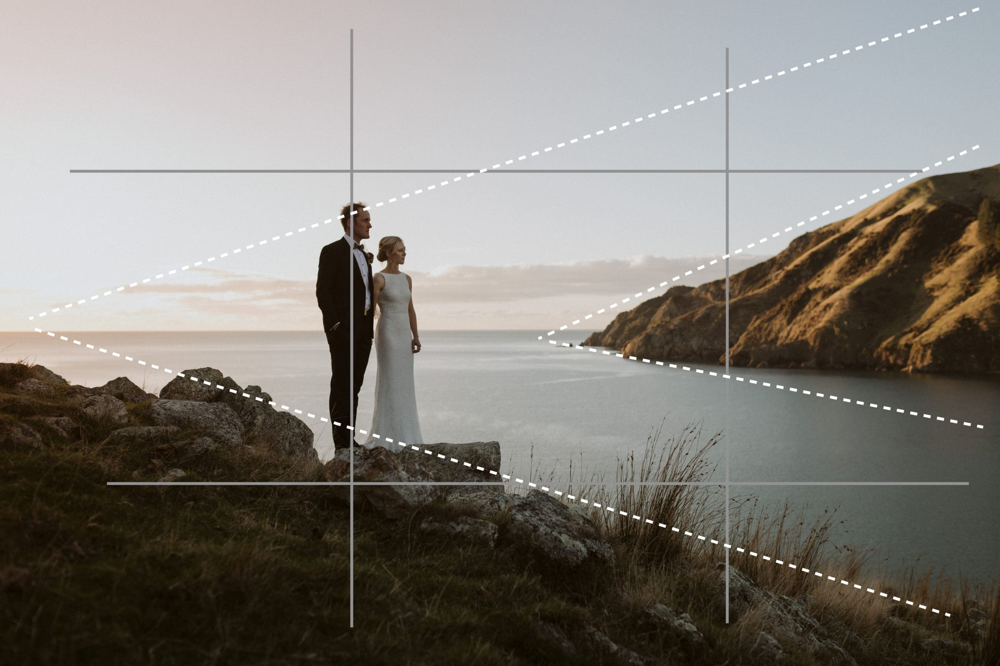
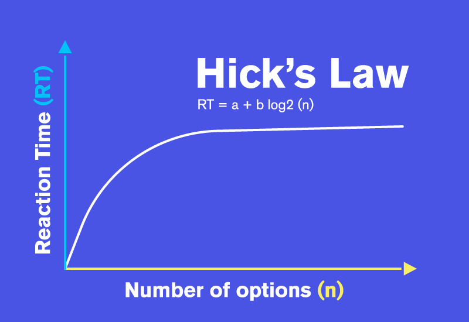

Visual Hierarchy
Knowlegeable Design
Knowlegeable Design
Visual hierarchy refers to the arrangement or organization of elements within a design
in a way that guides the viewer's eye through the content in a
specificorder of
importance. It's about creating a clear and logical structure that helps users navigate and understand
the information presented.
Rule Of Thirds
RangeFinderOnline
RangeFinderOnline
The rule of thirds is a composition guideline that helps artists arrange subjects in a way
that draws the viewer's eye.
It's used in photography, graphic design, and other visual art.
Hicks Law
Mighty Fine Design
Mighty Fine Design
Hick's Law (or the Hick-Hyman Law) states that the more stimuli (or choices) users
face, the longer it will take them to make a decision.
For designers of all types,
this presents a challenge, making it imperative to offer the most useful set of
options to avoid frustrating the user.
This can be vital for safety.